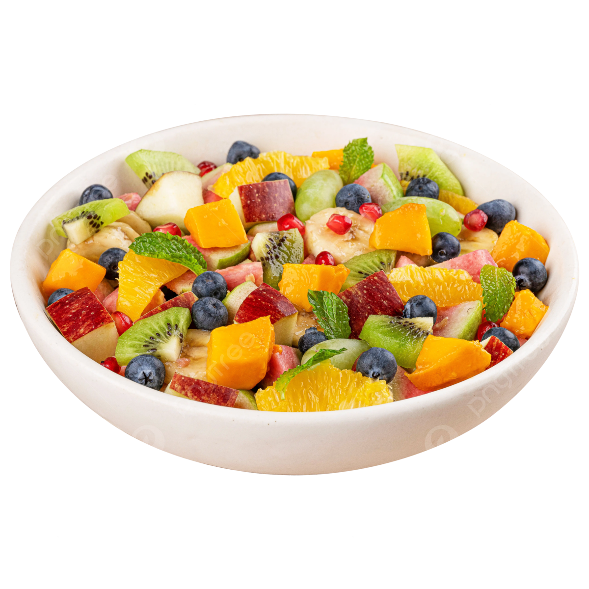

Home
📠Fresh Fruit Salad

Description
This vibrant fruit salad is a refreshing and healthy treat, perfect for
breakfast, a light snack, or a colorful dessert. Packed with a variety of
fresh fruits, it’s naturally sweet and full of vitamins. You can customize
it with your favorite seasonal fruits and add a zesty citrus dressing for
an extra burst of flavor.
Ingredients
- 1 cup strawberries, hulled and sliced
- 1 cup blueberries
- 1 cup pineapple chunks
- 1 cup mango, diced
- 2 kiwis, peeled and sliced
- 1 banana, sliced
- Juice of 1 lime or lemon
- 1 tablespoon honey or maple syrup (optional)
- Fresh mint leaves for garnish (optional)
Steps
- In a large bowl, combine all the prepared fruits gently.
-
In a small bowl, whisk together the lime (or lemon) juice and honey (if
using).
- Pour the dressing over the fruit and toss lightly to coat.
- Garnish with fresh mint leaves if desired.
- Serve immediately or chill for 30 minutes to let flavors meld.
Tips
-
🉠Use whatever fruits are in season for the freshest
taste and best price.
- 🌠Add the banana last to prevent browning.
-
❄️ Chill the fruit salad before serving to keep it cool
and refreshing.
-
🌿 Fresh herbs like mint or basil add an aromatic
twist.
-
🥥 Sprinkle with shredded coconut or nuts for extra
texture.